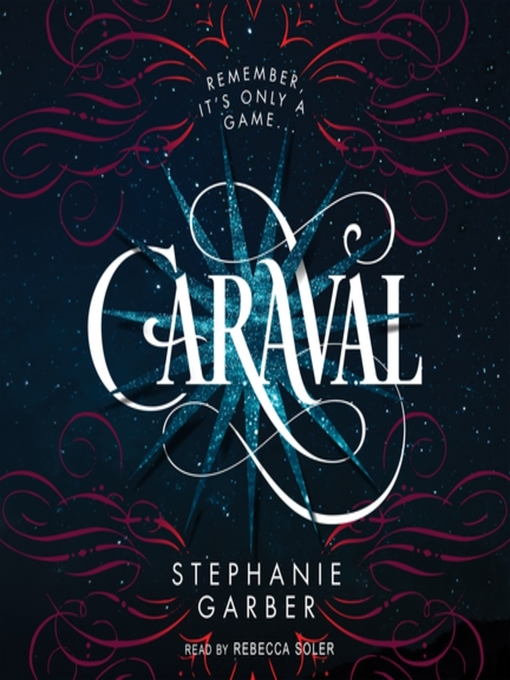
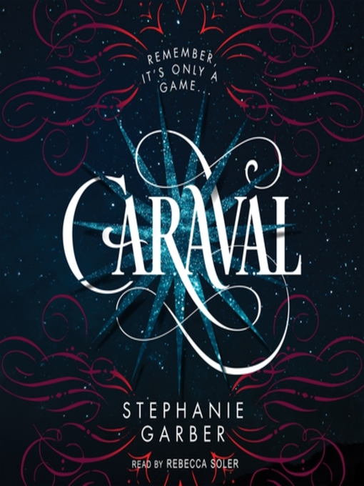
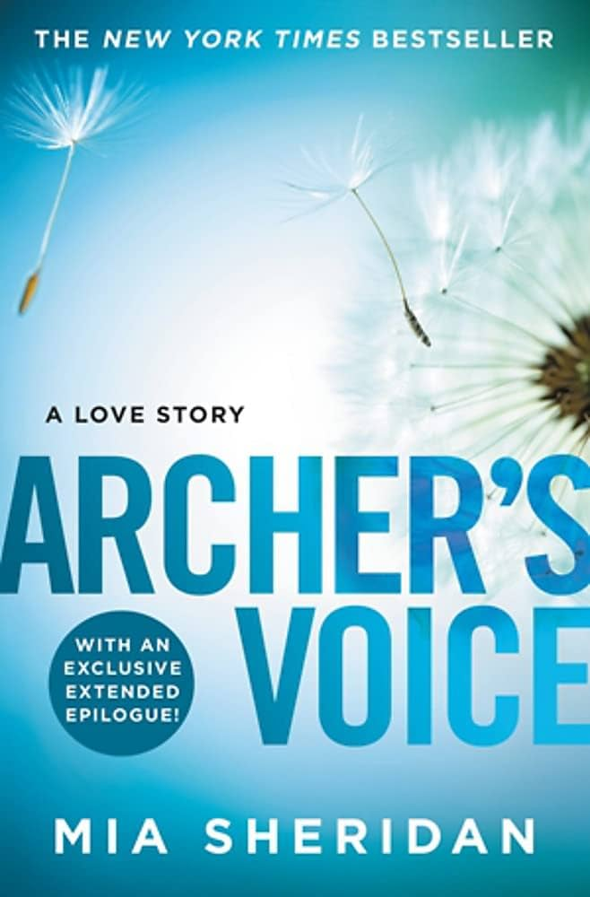
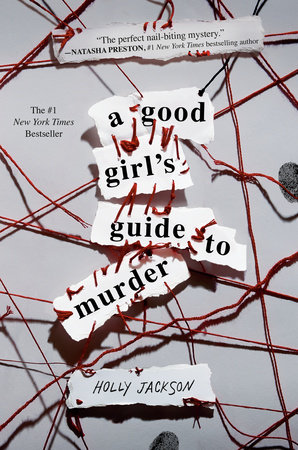
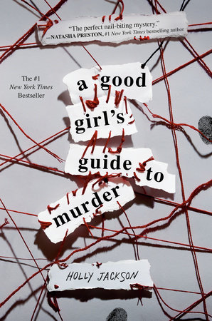

Fantasy
- Throne of Glass (series) by Sarah J.Maas
- The Cruel Prince (trilogy) by Holly Black
- Crescent City (series) by Sarah J.Maas
- Fourth Wing (duology) by Rebecca Yarros
- Caraval (trilogy) by Stephanie Garber


 

Romance or YA
- Archer's Voice by Mia Sheridan
- Fault in our Stars by John Green
- You've Reached Sam by Dustin Thao
- Red, White and Royal Blue by Casey McQuinston
- A Good Girl's Guide to murder (trilogy) by Holly Jackson



 

Mystery
- The Secret History by Donna Tartt
- The Silent Patient by Alex Michaelides
- Shadow of the Wind by Calos Ruiz Zafón
- Murder Most Unladylike by Robin Stevens
- Murder on the Orient Express by Agatha Christie


Adventure
- Percy Jackson (series) by Rick Riordan
- The Golden Compass by Philip Pullman
- Legend by Marie Lu
- Song of Achiles by Madelaine Miller
- The Prison Healer by Lynette Noni


Classic
- Little Women by Louisa May Alcott
- Pride and Prejudice by Jane Austen
- Journey to the Center of he Earth by Jules Verne
- I Capture the Castle by Dodie Smith
- The Perks of Being a Wallflower by Stephen Chbosky